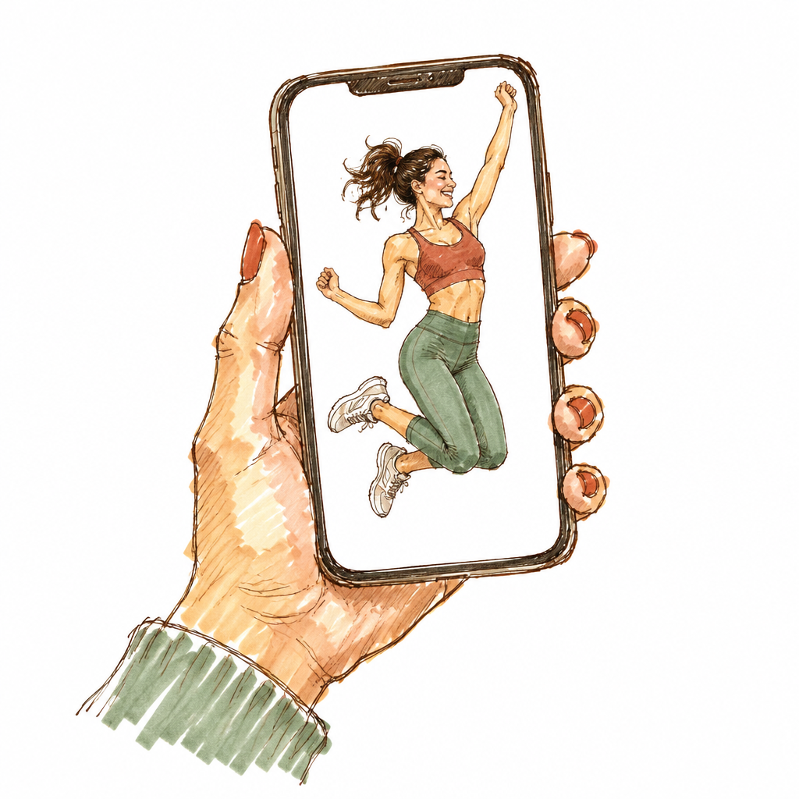
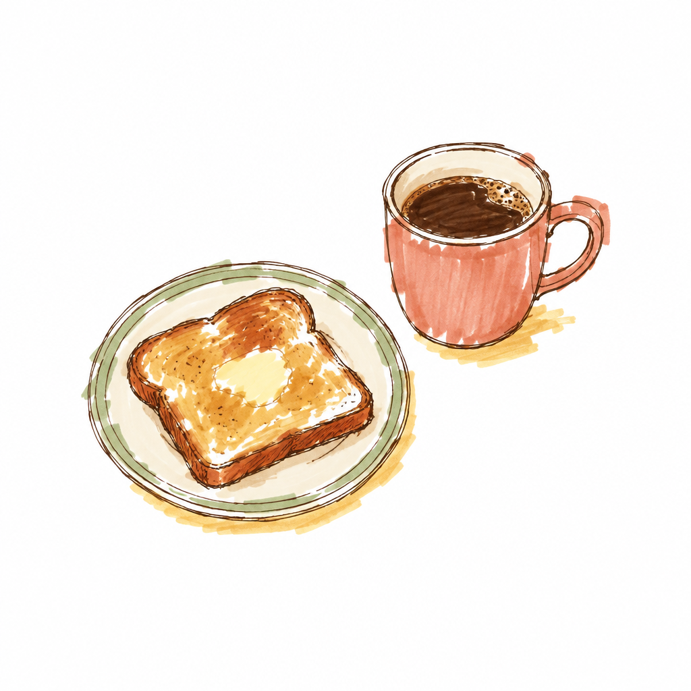
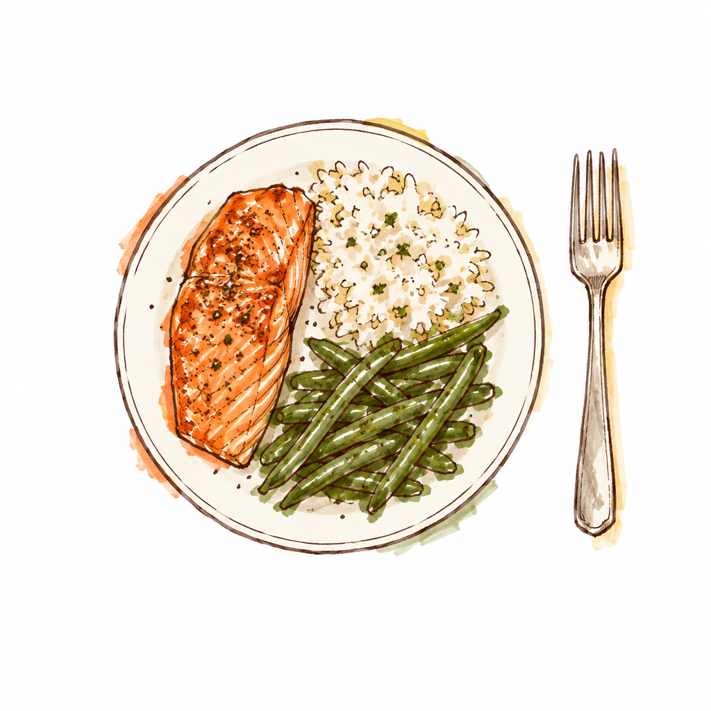
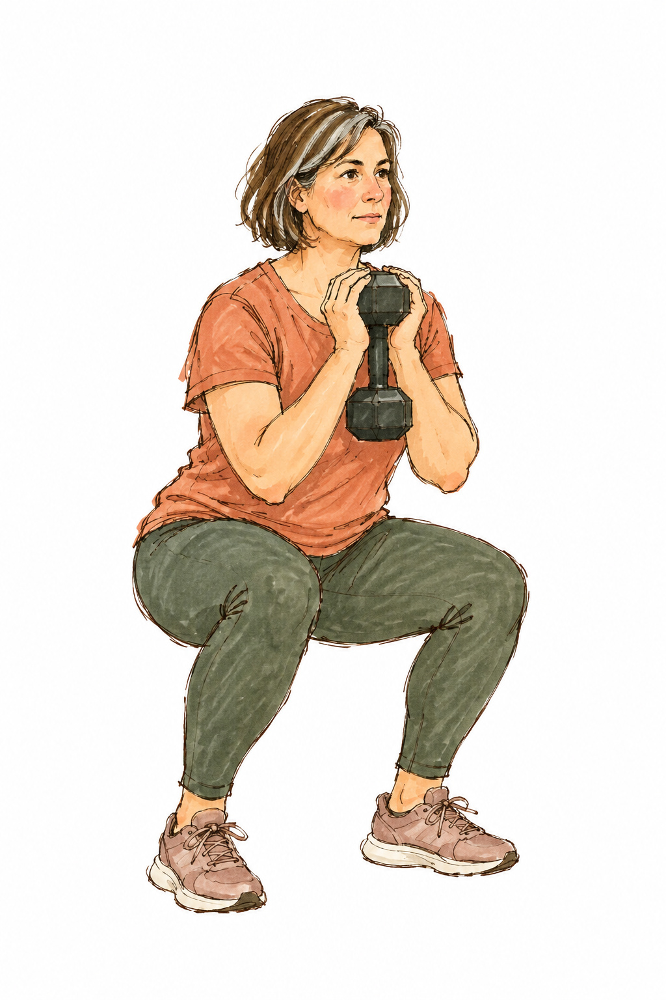
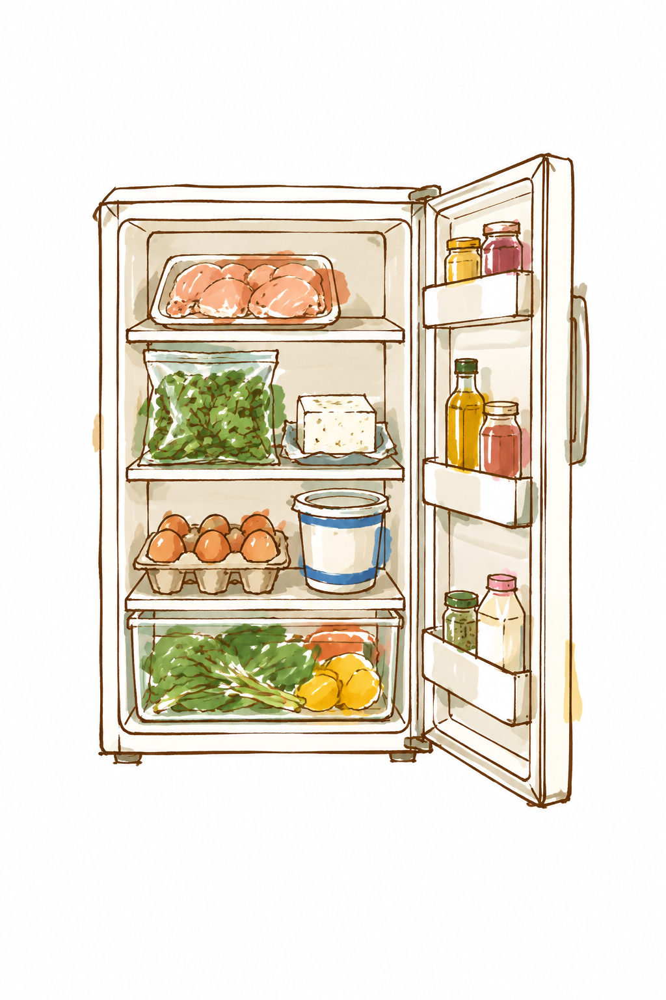

0g
of protein a day.
Most women over 40.*

3am.
Wide awake.
Stairs feel
steeper.
4pm fog.
keel
Strength & nutrition
after 40

KEEL COACH
Lighter session today. Protein at breakfast.


Chicken, spinach & feta
38G PROTEIN · 20 MIN
keel
Strong for life.
Start your free trial